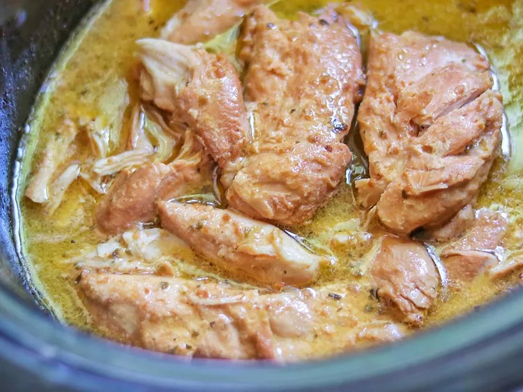

Crockpot Italian Chicken

Description
Here I will tell you how to make this wonderful dish
Ingredients
- 1 (16 ounce) bottle Italian dressing (such as Olive Garden℠ Signature Italian Dressing)
- 1/4 cup grated Parmesan cheese
- 4 boneless skinless chicken breasts
Steps
- Stir Italian dressing and Parmesan cheese together in a bowl.
- Place chicken in a slow cooker, and pour dressing mixture over chicken. Cover and cook on Low until chicken is tender, no longer pink in the center, and the juices run clear, about 8 hours.
Nutritional Facts (per serving)
- Calories = 506
- Fat = 31g
- Carbs = 15g
- Protein = 39g